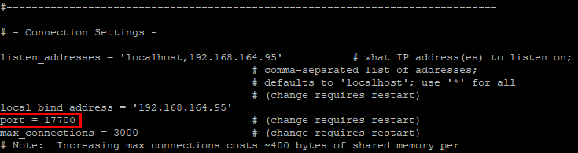

在执行磐维CMDB数据库备份前必须开启归档模式，否则将会导致备份失败。
操作步骤
- 使用PuTTY，登录磐维CMDB数据库主机。
- 执行以下命令切换至数据库安装用户，以用户名omm为例。
su - omm
- 执行以下命令，创建存放归档日志（WAL日志）的路径，后续操作以“/database/panweidb/archive/”路径为例。
mkdir -p /database/panweidb/archive/
- 登录数据库管理员用户。
- 查询数据库端口号，在数据库主机执行以下命令，进入postgresql.conf文件，以“/database/panweidb/data/postgresql.conf”路径为例。
vi /database/panweidb/data/postgresql.conf
回显示例如下，port所在行显示查询的端口号，以端口号17700为例。

- 执行以下命令，登录数据库管理员用户postgres。
gsql -d postgres -p 17700
- 查询数据库端口号，在数据库主机执行以下命令，进入postgresql.conf文件，以“/database/panweidb/data/postgresql.conf”路径为例。
- 执行show config_file;查询postgresql.conf文件所在路径。
回显示例如下：
postgres=# show config_file; config_file --------------------------------------- /database/panweidb/data/postgresql.conf (1 row) - 在数据库主机执行以下命令，进入postgresql.conf文件，这里以“/database/panweidb/data/postgresql.conf”路径为例。
vi /database/panweidb/data/postgresql.conf
- 修改postgresql.conf文件中的wal_level、archive_mode和archive_command参数，如下所示：
wal_level = hot_standby # minimal, archive, hot_standby or logical archive_mode = on # enables archiving; off, on, or always archive_command = 'cp %p /database/panweidb/archive/%f' # command to use to archive a logfile segment

- 将wal_level设置为archive, hot_standby 或 logical三个参数中的任意一个即可。
- 将archive_mode设置为on。
- 将archive_command设置为 'cp %p /mnt/server/archivedir/%f'。
- 修改postgresql.conf文件时，请修改文件中已存在的字段值，请勿在文件中自行新增同样的字段，否则将会影响恢复任务。
- 开启归档模式时需在数据库的所有主备节点上配置归档日志路径，且归档日志路径相同。
- 执行以下命令，重启数据库。
pw_ctl restart -D /database/panweidb/data

数据库重启期间数据库业务会中断，请谨慎操作。